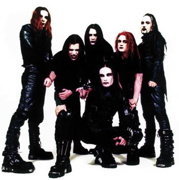
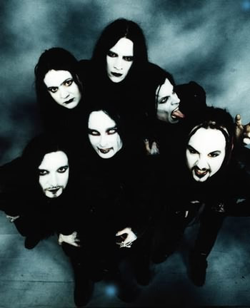

A trajetória da banda londrina Cradle
of Filth tem início nos primeiros anos da década
de 90. Naquele momento, Daniel Davey era apenas um jovem
que havia concluído os estudos e interessava-se por
Metal.
No ano de 1991, Daniel reuniu John, Darren,
Robin, Paul Ryan e Bem Ryan para dar início aos primeiros
ensaios. A sonoridade ainda crua refletia as ambições
daquele grupo de jovens londrinos. Assim nascia o Cradle
of Filth.
Os primeiros trabalhos demo surgiram em
pouco tempo. Em 1992 foi gravado Invoking The Unclean
e The Black Goddess Rises; Orgiastic Pleasures
no ano seguinte. Neste momento, Robin já não
compunha a formação. Porém, Orgiastic
Pleasures rendeu ao grupo uma oportunidade com a gravadora
Tobstone Records. Entretanto, a saída de John impossibilitou
que o contrato fosse fechado. Robin retorna à formação
na condição de baixista e finalmente é
gravada a demo intitulada Total Fucking Darkness.
Este trabalho proporcionou um contrato
com a gravadora Cacophonous Records em 1994. No mesmo ano,
o primeiro álbum foi gravado contando com a participação
de novo integrante Paul Allender.
The Principle of Evil Made Flesh
foi lançado em abril de 1994 e conseguiu uma repercussão
muito acima da expectativa: 32 mil cópias vendidas.
As treze faixas (sendo uma instrumental) trazem
uma musicalidade crua e agressiva, muito próxima
do que pode ser considerado Black Metal. Os integrantes
adotaram nomes fictícios, vestiam-se e usavam maquiagem
como um aspecto bastante soturno; por vezes satânico.
As letras deste álbum traziam temas vampíricos
e alusões à Elizabeth Bathory; provavelmente,
fruto da obras de Baudelaire, Shelley e Byron, autores que
Dani apreciou muito na adolescência.
Em 1995, os irmãos Ryan abandonam
a formação e iniciam um novo projeto intitulado
Blood Divine. O tecladista Damien e o guitarrista
Stuart Anstis passam a integrar a banda. Ainda, uma apresentação
live em Berlin rendeu ao grupo a primeira experiência
ao vivo. No mesmo ano, o contrato com a gravadora é
rompido e, em 1996, é lançado o último
disco pela Cacophonous Records: Vempire or Dark Faerytales
in Phallustein.
As seis músicas deste EP (incluindo
uma reedição de The Forest Whispers My
Name do trabalho anterior e a instrumental She
Mourns a Lengthening Shadow) soam como uma continuidade
de The Principle of Evil Made Flesh e ajudam a
fortalecer a imagem Black Metal do Cradle of Filth.
No mesmo ano, a vocalista Sarah Jezybel
passa a compor a formação enquanto Paul Allender
deixa a banda e é substituído por Jared Dementer.
Em seguida, é assinado um contrato com a gravadora
Music For Nations enquanto o recém chegado Paul Allender
saí do grupo e dá lugar à Gyan Pyres.
Neste mesmo ano, seria lançado um dos álbuns
mais impactantes da discografia do Cradle of Filth.
Dusk and Her Embrace traz onze
faixas escritas por Dani Filth que exploram a temática
vampírica com um apelo erótico bastante nítido.
Os arranjos soam mais complexos e orquestrados. Foi através
de Dusk and Her Embrace que o Cradle of Filth atingiu uma
popularidade imensa e ganhou notoriedade entre a crítica
musical européia e o grande público headbanger.
Este trabalho também abriu as portas para as turnês
internacionais e colocou o Cradle of Filth entre as grandes
bandas do metal.
Em 1997 a banda apresentou-se em festivais
e realizou uma turnê nos Estados Unidos. Em uma destas
oportunidades, o baterista Nicholas chegou a ser detido
pela polícia local por usar uma camisa anti-cristã,
mas foi solto após fiança.
O tecladista Damien abandona a formação
e passa a escrever para uma revista especializada em Metal.
Lês Lector Smith é seu substituto iniciaram-se
os preparativos para o novo trabalho com o produtor Jan
Peter Genkel.
Cruelty and The Beast (frase de
Nitzsche que originalmente é "There is no
beast without cruelty" - "não
existe besta sem crueldade") de 1998, é
o título do terceiro álbum de estúdio.
Lançado em diversas versões com regravações
e remix, mantém a proposta e aborda a vida de Elizabeth
Bathory – A condessa de Sangue. Além do belo
trabalho gráfico do encarte, os destaques musicais
são Beneath the Howling Stars e Desire
in Violent Overture.
Cruelty and The Beast proporcionou à
banda turnês por países como Rússia
e Japão. As participações em coletâneas
do gênero também fortaleceram sua popularidade.
Ainda, manifestações anti-cristãs da
banda, em entrevistas e shows, polemizaram sua imagem por
um lado; por outro, contribuíram bastante para uma
certa mitificação de uma proposta satânica.
Ainda neste ano, foi lançado o EP Venus In Fear.
Novamente, em 1999, a formação
da banda sofre alterações. Entre elas, a saída
do baterista Nicholas alegando divergências pessoais
(passando a integrar o Dimmu Borgir); sendo substituído
por Adrian Erlandsson. Lector e Stuart também deixam
a formação enquanto Paul Allender retorna.
O EP From the Cradle To Enslave é lançado
no mesmo ano com seis faixas, sendo duas inéditas,
dois covers (Anathema e Misfits) e duas regravações
de Dusk And Her Embrace. Em seguida, é lançado
vídeo PanDaemonAeon com videoclipes da faixa From
The Cradle To Enslave em duas versões, sendo uma
mais "suave" para exibição em emissoras de
TV; além do making off deste clipe e quatro músicas
gravadas ao vivo.
Martin Powell, ex-integrante do My Dying
Bride junta-se ao Cradle of Filth em 2000. No mesmo ano,
Dani Filth participa do filme Cradle Of Fear, produzido
pelo diretor do videoclipe From The Cradle To Enslave. Finalmente,
em 31 de outubro, é lançado o quarto álbum.
Midian traz onze músicas
que recorrem aos riffs e às vocalizações
agressivas de Dani. As letras continuam extensas e bem construídas.
O álbum é prontamente aceito pelos fãs
e a crítica classifica Midian como um dos mais sofisticados
trabalhos daquele ano. Destaques para Death Magik For
Adepts e Lord Abortion.
O ano de 2001 traz novas mudanças
no Cradle of Filth. A banda deixa a gravadora Music for
Nations e cria o próprio selo: Abracadaver.
Robin Graves deixa o grupo alegando ter pouco tempo disponível
para a família. Dave Pyrus (ex integrante do Anathema)
é seu substituto.
No mesmo ano, o EP Bitter Suites to
Succubi, já pela Abracadaver, é lançado
trazendo faixas inéditas, além de regravações
de discos anteriores e um cover do The
Sisters of Mercy. No Time To Cry foi mais um
trabalho promocional deste período. Em abril, uma
apresentação é gravada e compilada
no formato de CD/DVD e lançado posteriormente.
O ano seguinte foi muito importante para
a carreira do Cradle of Filth. O contrato com a poderosa
Sony abriu uma nova perspectiva de crescimento. A participação
no festival Ozzfest-UK juntamente com Slayer, System Of
A Down e Ozzy Osbourne colocou a banda novamente em evidência.
No
mesmo ano, a ex gravadora "Music for Nations"
lança um álbum do tipo "The Best of" intitulado
Lovecraft & Witch Hearts trazendo os maiores sucessos
dos discos anteriores e algumas versões raras. Infelizmente,
mais uma vez, o line up é modificado: Gian Pyres
deixa a banda.
Em 2003 foi lançado o primeiro trabalho
pela Sony: Damnation and a Day: From Genesis To Nemesis.
Mais uma vez, a temática conceitual é a tônica,
abordando anjos, demônios e a criação.
Neste trabalho, ao longo de dezessete faixas, a banda se
apresenta com uma sonoridade mais polida; porém,
mantendo a agressividade e característica. Em seguida
a banda toca ao lado do Iron Maiden e se apresenta em festivais
e turnês pela Europa e América do Norte. A
faixa Mannequin do álbum mais recente ganha
uma versão em videoclipe e Babalon A.D (So Glad
For The Madness) é lançado também
em videoclipe num DVD single.
Nymphetamine é o trabalho
de 2004, lançado pelo próprio selo Abracadaver
e se torna uma das mais poderosas referências de sua
discografia e traz as participações de James
Mcilroy (guitarrista recém chegado à banda)
e Liv Kristine (ex vocalista do Theatre
of Tragedy). O álbum duplo, contendo na totalidade
21 músicas, incluindo uma regravação
do clássico Mr. Crowley de Ozzy Osbourne.
Em alguns momentos, este disco faz um resgate
sonoro aos anos 80, combinando com a característica
agressiva e poderosa que conduziu a carreira da banda. Os
destaques são English Fire e Swansong
For A Heaven.
O show de abril de 2005, em Paris, foi
gravado e, no fim deste mesmo ano, foi lançado o
DVD Peace Through Superior Firepower. Este DVD
traz um documentário, entrevistas, videoclipes e
as apresentações ao vivo da banda. Neste momento,
já iniciam-se os preparativos para o próximo
álbum. Assim, no ano seguinte, pela Roadrunner Records,
é lançado o sétimo trabalho.
Thornography traz doze faixas
que também resgatam uma atmosfera oitentista e pode
ser considerado um dos trabalhos mais "pesados" de sua discografia.
Sarah Jezebel e Ville Valo são os convidados nas
faixas Under Huntress Moon e Byronic Man.
Os destaques são I Am The Thorn e The
Foetus Of A New Day Kicking.
Como de costume, o guitarrista Germs Warfare
deixou a banda e foi substituído por Charles Hedger.
Adrian Erlandesson também abandonou a formação
após o término das gravações
de Thornography. Na mesma época foi lançado
o single Temptation. Em 2007 foi lançado
uma edição de luxo do Thornography com o título
Thornography-Harder Darker Faster contendo vídeos
e algumas faixas extras. Ainda, um live duplo intitulado
Eleven Burial Masses é lançado em
maio.
No ano seguinte, ainda pela Roadrunner,
é lançado em outubro o oitavo disco de estúdio
do Cradle of Filth. Godspeed on the Devil's Thunder
mantém a proposta conceitual e aborda a biografia
do nobre francês Gilles de Rais que lutou ao lado
de Joanna D’arc. A musicalidade não difere
muito da discografia: guitarras pesadas, linhas de baixo
contínuas e as vocalizações de Dani
Filth confirmam mais um excelente trabalho; sem, no entanto,
apresentar grandes novidades.
Nos anos seguintes, a banda deu continuidade
às turnês ao lado de Moonspell e Gorgoroth
e apresentações em festivais europeus. Em
agosto de 2009 é lançado o videoclipe de The
Death of Love. Poucos dias depois, no Bloodstock Open
Air, em Derbyshire, Inglaterra, o guitarrista Paul Allender
foi atingido por um objeto arremessado da platéia.
O músico teve que receber atendimento médico
e a apresentação foi interrompida em seguida.
Em novembro de 2009, Allender publicou uma nota no website
da banda comentando sobre o progresso dos trabalhos para
o próximo álbum.
Desde os primeiros acordes e linhas de
baixo, muitas histórias, músicas e músicos
compuseram a trajetória do Cradle of Filth. Além
dos trabalhos citados, a banda tem em sua discografia EP’s
e singles, além de participações em
coletâneas que enriquecem sua carreira. Agora, resta
aos fãs do Cradle of Filth aguardarem por mais um
lançamento e um capítulo de sua imensa história.
Por
Spectrum